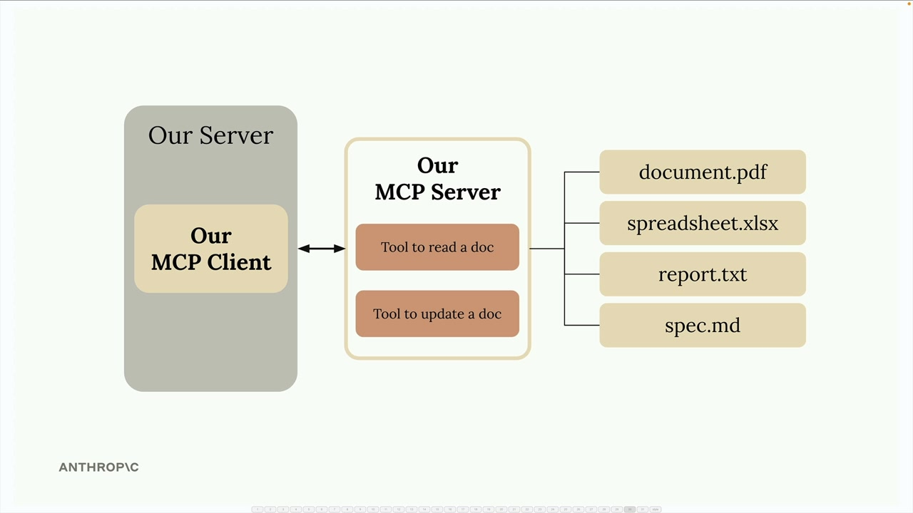
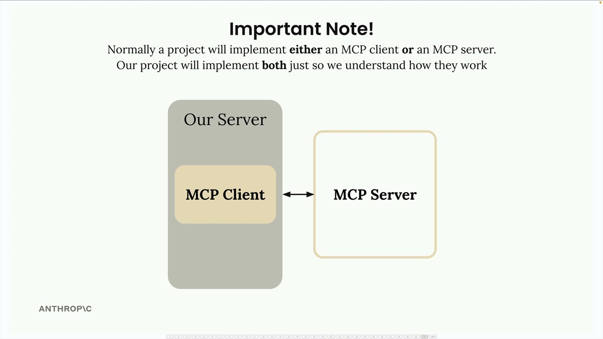

Подготовка проекта
Чему научитесь
Видео 3:09 и текст урока
К концу урока вы сможете:
- описать учебный проект: CLI-чат, MCP-клиент и MCP-сервер с документами;
- объяснить, почему в реальных проектах обычно пишут что-то одно — клиент или сервер;
- запустить стартовое приложение.
Видео и текст урока.
Смотреть урок на Skilljar Project setup · 3:09Чтобы лучше понять, как MCP-клиенты и серверы работают вместе, мы построим чат-бот с интерфейсом командной строки (CLI). Этот практический проект даст опыт работы с обеими сторонами архитектуры MCP.
Что строим
Чат-бот позволит пользователям работать с набором документов через командную строку. Система состоит из двух основных компонентов:
- MCP-клиент, который обрабатывает взаимодействие с пользователем;
- собственный MCP-сервер, который управляет операциями с документами.

Сервер даст два основных инструмента: один читает содержимое документа, другой его обновляет. Все документы для простоты хранятся в памяти — база данных не нужна.
Важное замечание об архитектуре
В реальных проектах обычно реализуют либо MCP-клиент, либо MCP-сервер, а не оба. Например:
- MCP-сервер — чтобы открыть ваш сервис другим разработчикам;
- MCP-клиент — чтобы подключаться к существующим MCP-серверам.

Мы строим оба компонента в этом проекте исключительно в учебных целях — чтобы понять, как они общаются и работают вместе.
Подготовка проекта
Скачайте архив cli_project.zip, приложенный к этому уроку на Skilljar, и распакуйте в удобную папку для разработки. Откройте папку проекта в редакторе кода.
В проекте есть подробный README с инструкциями. Шаги такие:
- добавить ключ Anthropic API в файл
.env; - установить зависимости через UV (рекомендуется) или pip;
- запустить стартовое приложение и убедиться, что всё работает.
Запуск приложения
Перейдите в папку проекта в терминале. Там основные файлы: main.py, mcp_client.py и mcp_server.py.
Запустить приложение можно одной из команд:
# If using UV (recommended) uv run main.py # If using standard Python python main.py
Если приложение запустилось, вы увидите приглашение чата. Проверьте его простым вопросом вроде «what's 1+1?» — Claude должен быстро ответить.
Базовая настройка готова — можно переходить к реализации возможностей MCP и разбираться, как клиенты и серверы общаются через Model Context Protocol.
Дальше
Следующий урок — инструменты MCP-сервера на Python SDK.
Оригинал урока: Project setup.